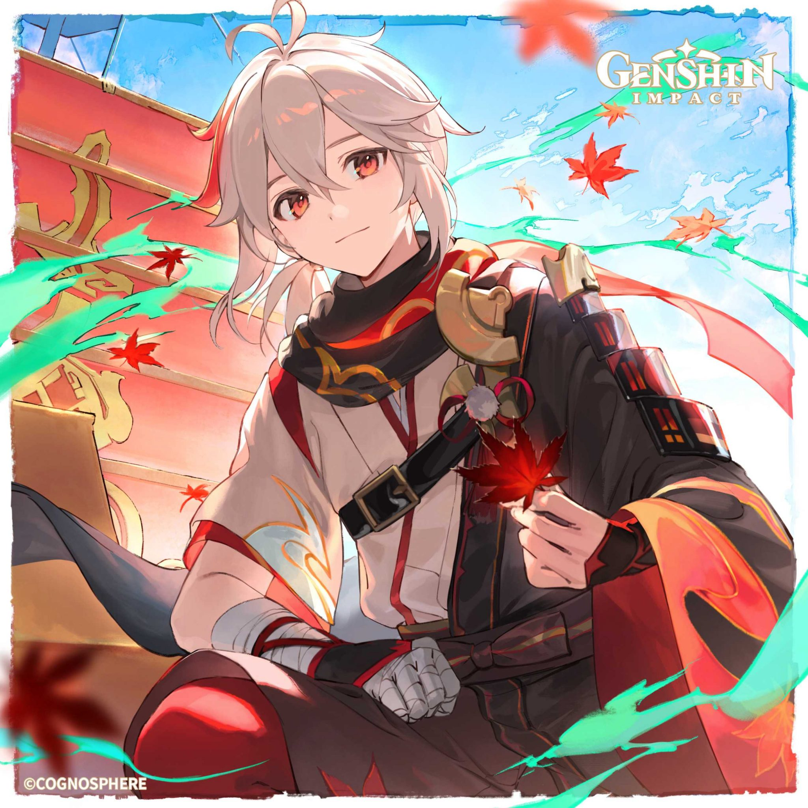
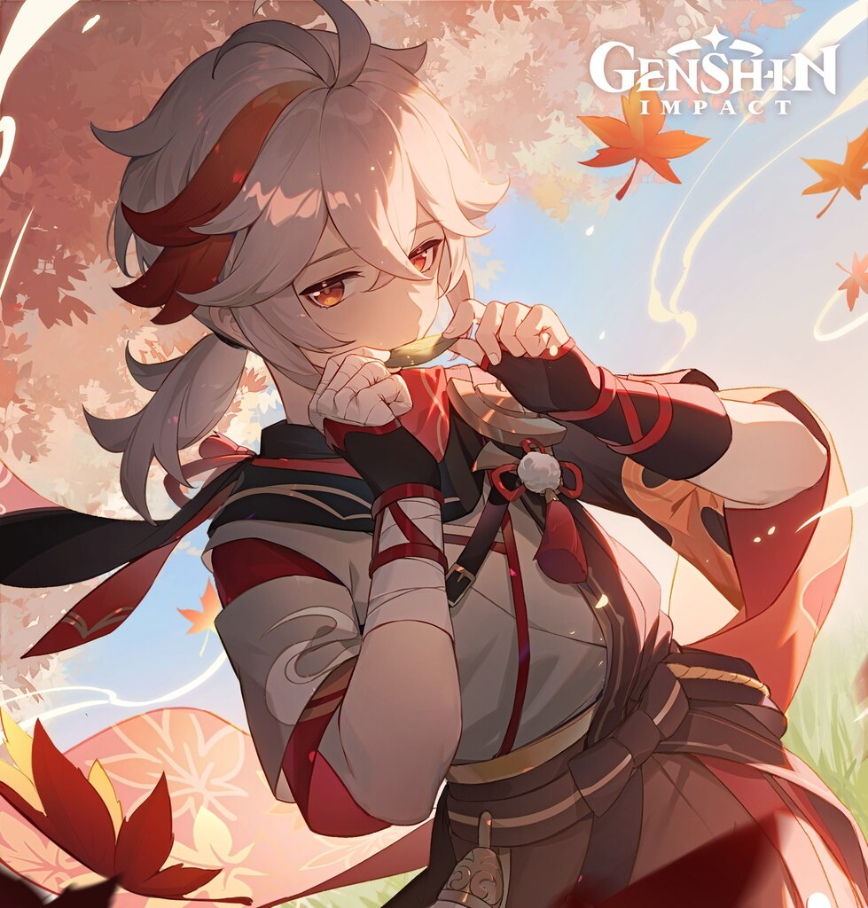

Kaedehara Kazuha
Kaedehara Kazuha merupakan karakter dengan rarity bintang *5 yang
memegang elemen Anemo serta miliki senjata Sword. Ia dijuliki
sebagai “A Wandering Samurai” atau “Samurai Pengembara”. Saat ini,
ia menjadi anggota sementara kapal The Crux milik Beidou. Ia miliki
masa lalu yang kelam, namun ia masih bisa mempertahankan sifatnya
yang ramah; baik sesama manusia ataupun ramah lingkungan

Kaedehara Kazuha
Semua orang tahu bahwa Kazuha adalah penyair yang bertalenta, namun
tidak banyak yang tahu bahwa dia suka bermain musik. Dalam salah
satu animasi idle-nya, Kazuha terlihat meniup selembar daun dan
menghasilkan melodi yang indah layaknya seruling. Dalam salah satu
voice-line, Kazuha menangkap suara gemerisik dedaunan yang tertiup
angin. Sangat cocok dengan Kazuha karena daun sendiri adalah bagian
utama dari estetiknya.

Kaedehara Kazuha
Meskipun Kazuha adalah pengembara dari Inazuma, tentu saja Raiden
Shogun tidak semudah itu membiarkan warganya keluar dari Inazuma.
Kazuha sendiri harus pergi diam - diam menggunakan The Crux milik
Beidou. Kazuha ingin sekali berkelana menjelajahi seluruh bangsa di
Teyvat. Meskipun untuk sementara dia tinggal dengan Beidou dan kru
kapal Crux, namun sudah sifat asli Kazuha yang ingin sekali
berkelana dan bertemu banyak orang. Hanya menunggu waktu saja sampai
ia bisa memenuhi mimpinya sendiri.